América tiene una superficie de 42 087 035 km2 y es el segundo continente más grande del planeta después de Asia.
-
01
Geografía física y humana de América
Open or Close01.1El aspecto físico de América
01.1.1La posición geográfica y astronómica
De acuerdo con su posición geográfica, América limita al norte con el océano Glacial Ártico, al oriente con el océano Atlántico, al sur con el océano Glacial Antártico, y al occidente con el océano Pacífico.
Los puntos extremos del continente americano, que marcan su posición astronómica son:
- Latitud: al norte, el cabo Punta Barrow, localizado en la costa septentrional de Alaska a los 71º 23' 20" de latitud norte; y al sur, el cabo de Hornos en la isla de Hornos, perteneciente a Tierra del Fuego en Chile, ubicado a los 55º 59' 48" de latitud sur.
- Longitud: al oeste, el cabo Príncipe de Gales, ubicado en la península de Seward en Alaska a los 168º 05'05" de longitud oeste; al este, el cabo San Roque en Brasil, localizado a los 35º 15' 41 " de longitud este.
01.1.2El relieve y el clima
La principal característica del relieve de América es el sistema de cordilleras que atraviesan el continente de sur a norte. Entre sus cordilleras se destaca la línea de montañas formada por las Rocosas y la Sierra Madre en América del Norte, y los Andes, en América del Sur.
Las llanuras más sobresalientes del continente son las Grandes Llanuras de América del Norte, como la del Mississippi, y en América del Sur, la pampa argentina, la llanura del Orinoco y la del Amazonas.
Entre las mesetas del continente sobresalen elevaciones como la meseta del Labrador y los montes Apalaches en América del Norte, el macizo de México, y la meseta de las Guayanas y la meseta Brasileña en América del Sur.
Las principales penínsulas del continente son las del Labrador, Baja California, Alaska y Yucatán, y entre sus islas se destacan las Antillas.
Los climas del continente americano CLIMA UBICACIÓN Y CARACTERÍSTICAS Clima cálido Este clima se encuentra en América del Sur y América Central y parte de América del Norte.
Características
- Temperaturas: altas durante todo el año.
- Precipitaciones: abundantes.
- En el paisaje predomina la vegetación de bosques, sabanas y selvas.
Subclases predominantes
- Climas ecuatoriales: ubicados a lado y lado de la línea del Ecuador.
- Climas tropicales: localizados en la costa sur de México; en Costa Rica y el resto de Centroamérica; y en zonas de América del Sur, como los llanos y costas de Colombia y Venezuela, las costas de Ecuador y Perú, el oriente de Bolivia, el noroccidente de Argentina y el occidente de Paraguay.
- Climas subtropicales: son propios de zonas de Brasil, la mesopotamia argentina y del golfo de México, donde la temperatura se caracteriza por tener pocas variaciones entre inviernos y veranos.El clima templado Propio de las zonas ubicadas entre los trópicos y los círculos polares. Está presente en Estados Unidos, Canadá, sur de Chile, Uruguay y Argentina.
Características
- Predominan las cuatro estaciones: otoño, invierno, primavera y verano. En cada una de ellas varían las temperaturas y precipitaciones, así: veranos con altas temperaturas, inviernos fríos, primaveras de temperaturas medias a altas y otoños con temperaturas bajas.
- El paisaje se caracteriza por una vegetación principalmente compuesta por praderas y bosque de coníferas.
Subclases predominantes
- Clima mediterráneo: propio de México y parte de Estados Unidos. Se caracteriza por temperaturas suaves en las épocas de invierno y altas en los veranos, con lluvias muy escasas.
- Clima templado marítimo: característico de ciertas zonas de Chile y América del Sur.
- Clima templado continental: ubicado en determinadas zonas de los Estados Unidos. Se caracteriza por las pocas lluvias y por temperaturas altas en verano y muy bajas en invierno.
- Clima templado por altitud: se ubica en las mesetas de Centroamérica y los Andes de Suramérica. No se presentan las cuatro estaciones y las diferencias de las temperaturas obedecen a la altitud, es decir, a mayor altitud menor temperatura.El clima de zonas polares Este clima es característico de los territorios de las islas Árticas, Groenlandia, Alaska, norte de Canadá y la Antártida.
Características
- Temperaturas: no superan los 10 ºC incluso en verano. Los inviernos y veranos duran seis meses cada uno.
- Precipitaciones reducidas.
- El paisaje: la vegetación es muy escasa, formada principalmente de algas.
- En la fauna predominan especies marinas, como focas y elefantes marinos. También se encuentran en estas zonas diferentes aves.El clima desértico El clima desértico se localiza en México septentrional y al sur de Estados Unidos. También existe al norte de Chile y en la península de La Guajira en Colombia.
Características
- Temperaturas: elevadas en el día, durante todo el año. Se presentan bajas temperaturas en las noches.
- Precipitaciones: escasas.
- El paisaje cuenta con poca vegetación y la que hay es dispersa. Predominan matorrales, hierbas y cactus.
- La fauna: se compone principalmente de reptiles, insectos, aves y algunos mamíferos como los ratones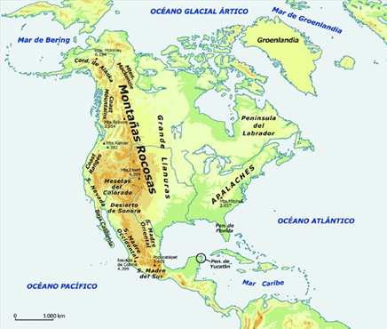Entre las principales unidades del relieve norteamericano se cuentan las montañas Rocosas, las Grandes Llanuras, los montes Apalaches y el altiplano de México.
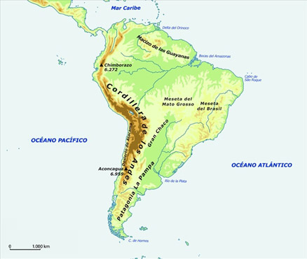Entre las principales unidades del relieve suramericano se cuentan la cordillera de los Andes, el macizo de las Guayanas, la meseta del Mato Grosso, la pampa y la Patagonia.
01.1.3La hidrografía
América es un continente caracterizado por tener un gran número de ríos, muchos de ellos utilizados como vías de comunicación. Los ríos del continente americano se agrupan en cuatro vertientes: ártica, atlántica, caribe y pacífica.
- La vertiente ártica: los ríos que desembocan en el océano Ártico permanecen helados durante el invierno. El más importante es el Mackenzie.
- La vertiente atlántica: los ríos que desembocan en el océano Atlántico son largos y caudalosos. Los más importantes en América del Norte son el San Lorenzo, el Missouri, el Mississippi y el río Grande. Los ríos de la vertiente atlántica en América del Sur más importantes son el Amazonas (el más caudaloso del mundo), el Negro, el Madeira, el São Francisco, el Paraná, el Uruguay y el Paraguay.
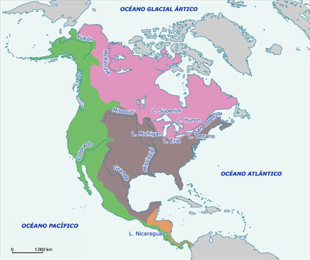En América hay una gran cantidad de ríos caudalosos. El Mississippi, por ejemplo, recorre 3778 km (o 5970 km si se considera el Missouri-Red Rock). Es el río más largo de América del Norte.
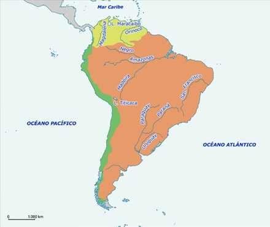El Amazonas (6280 km) es el segundo río más largo del mundo, aunque es el más caudaloso.
La vertiente del Caribe: los principales ríos suramericanos que desembocan en el mar Caribe son el Orinoco y el Magdalena.
La vertiente pacífica: los ríos que desembocan en el océano Pacífico son cortos y de régimen irregular. Los más importantes son el Yukón y el Colorado.
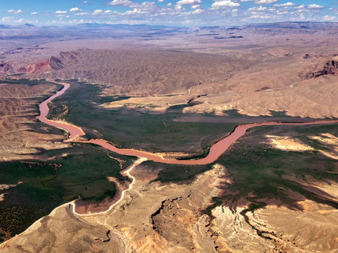El río Colorado (2334 km) nace en las montañas Rocosas, en el suroeste de Estados Unidos, y desemboca en el golfo de California, en México. A su paso por las mesetas del estado de Colorado, la fuerza de sus aguas forma el famoso Gran Cañón.
Los lagos americanos son numerosos y se concentran principalmente en América del Norte. En la región de los Grandes Lagos se encuentran el Michigan, el Superior, el Erie, el Hurón y el Ontario.
En América Central se encuentra el lago Nicaragua, mientras que en América del Sur destacan los lagos Titicaca y Maracaibo.
Por otro lado, las costas americanas están bañadas por distintos mares y océanos:
- El océano Atlántico: baña las costas orientales del continente.
- El mar Caribe: toca las costas septentrionales de América del Sur, las Antillas y la costa oriental de América Central.
- El océano Pacífico: baña las costas occidentales del continente. Queda conectado al océano Glacial Ártico a través del estrecho de Bering.
- El océano Glacial Ártico: baña las costas septentrionales de América y Groenlandia.
01.2El aspecto humano de América
América es el continente con mayor extensión después de Asia. Su aspecto humano está relacionado con las características de los tres subcontinentes que la conforman: Norteamérica, Centroamérica y Suramérica.
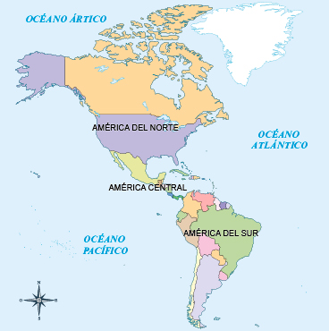América es el segundo continente más extenso del planeta. Su territorio se divide entre treinta y cinco Estados que, a su vez, se pueden agrupar en tres grandes áreas: América del Norte, América Central y del Caribe y América del Sur.
01.2.1La población
América tiene una población aproximada de 953,7 millones de habitantes, cifra que lo ubica como el segundo continente con mayor población del mundo. De acuerdo con el Banco Mundial, los países con mayor esperanza de vida son:
- En América del Norte, Canadá tiene una esperanza de vida de 81 años, y la de Estados Unidos es de 78 años.
- En América Central, Costa Rica cuenta con una esperanza de vida de más de 79 años.
- En América del Sur, los países con mayor esperanza de vida son Chile, Perú y Venezuela, con un promedio de vida de 74 años.
El continente americano se caracteriza por su diversidad étnica. Habitan allí indígenas, afrodescendientes, mestizos y gitanos.
En la mayor parte de los países de América Central y América del Sur habita población indígena. La Comisión Económica para América Latina y el Caribe (Cepal) calcula que son alrededor de 40 millones de indígenas. Estos se agrupan en aproximadamente 400 grupos étnicos caracterizados por su organización social, su modelo de producción, su lengua y su cosmovisión. Los países con mayor población indígena son Bolivia, Guatemala, México, Perú y Ecuador. Adicionalmente, también existen indígenas en Estados Unidos y Canadá.
En cuanto a la población afrolatina y afrocaribeña, la Cepal considera que en la región latinoamericana y del Caribe habitan alrededor de 150 millones de personas, 30 % de la población, principalmente en Brasil, Colombia y Venezuela. El censo de Estados Unidos, por su parte, indica que en ese país un 13,2 % de la población se reconoce como afroamericana.
La población rom o gitana se ubica mayoritariamente en Estados Unidos, Brasil, Canadá, México, Argentina, Colombia, Uruguay, Venezuela, Ecuador y Chile, organizada a través de las kumpeniyi (una forma de organización de grupos familiares que descienden de un mismo linaje).
¡Recuerda!
Diversidad étnica en Colombia
En Colombia la diversidad étnica fue reconocida constitucionalmente por la propuesta indígena de reforma constitucional presentada por Lorenzo Muelas Hurtado, indígena guambiano que formó parte de la Asamblea Nacional Constituyente de 1991. Este indígena hizo una defensa del Derecho Mayor, definiéndolo como "el derecho de nosotros indios, a seguir formando parte de la historia".
La Constitución de 1991 implicó un rompimiento de la concepción unitaria y excluyente de la Nación que existía en Colombia, y desde su primer artículo quedó consagrado el carácter pluralista de la República, el cual se materializa, entre otros principios, en el reconocimiento y protección de la diversidad étnica y cultural de la Nación colombiana. Una Nación constituida por indígenas, afrodescendientes, raizales, palenqueros, mestizos y gitanos.
(Texto tomado y adaptado del Banco de la República.)
01.2.2Las características políticas
América está conformada por 35 países independientes y por algunas zonas que se constituyen en dependencias de países, como Estados Unidos, Inglaterra y Francia.
América es un continente marcado por los procesos de colonización. Canadá y Estados Unidos son producto de la colonización francesa, inglesa, holandesa y española. Estos países son actualmente democracias constitucionales con formas federales de gobierno.
Estados Unidos está conformado por 50 estados, cada uno de ellos tiene autonomía para la definición de sus leyes. También pertenecen a este país el Distrito de Columbia, Puerto Rico, las Islas Marianas del Norte, Guam, las Islas Vírgenes Americanas y Samoa Americana. Este país tiene una población mayoritariamente urbana, la cual supera el 80 %. Sus principales ciudades son Nueva York, Los Ángeles, Chicago, Dallas, Houston, Miami, Filadelfia y, la capital, Washington.
Canadá es el segundo país más extenso del mundo. Está constituido por diez provincias y tres territorios. Su forma de gobierno es la monarquía parlamentaria federal y su jefe de Estado es la reina Isabel II, quien delega sus funciones al gobernador general de Canadá. El primer ministro es el jefe de Gobierno. Sus principales ciudades son Toronto, Montreal, Vancouver, Ottawa, Calgary, Edmonton y Quebec.
Los países que se ubican al sur del río Grande (Estados Unidos), incluyendo México, se conocen como pertenecientes a América Latina y el Caribe. Esta es una denominación geopolítica que da nombre a la región conformada por los países de América Central y el Caribe y América del Sur. La mayoría de sus países fueron colonizados por España, Francia y Portugal, aunque hubo algunos que estuvieron bajo dominio inglés y holandés.
Centroamérica y las Antillas están integradas por las repúblicas de Guatemala, Honduras, El Salvador, Nicaragua, Costa Rica, Panamá, Belice y los países y territorios ubicados en las islas antillanas mayores y menores. Predominan las formas de gobierno presidencialistas, como en Costa Rica, Guatemala, Honduras, El Salvador, Nicaragua, Panamá, Haití y República Dominicana. Existen sistemas parlamentarios en Belice, Jamaica y Bahamas. Cuba, por su parte, tiene un gobierno socialista de partido único.
América del Sur está conformada por 12 países. Argentina, Venezuela y Brasil son naciones en las que existe una forma de gobierno de repúblicas federales presidencialistas. Por su parte, Chile, Colombia, Ecuador, Perú, Paraguay, Uruguay y Bolivia son repúblicas democráticas presidencialistas. Surinam es una república representativa, formada por una cámara legislativa que tiene como función representar a todos los sectores de la población y elige al presidente y al vicepresidente.
Los siguientes territorios de América del Sur pertenecen a países europeos:
- Guayana Francesa: es territorio francés.
- Islas Georgias del Sur y Sandwich del Sur: son territorio británico.
- Islas Malvinas: es un territorio administrado por el Reino Unido.
Todos los 35 países independientes del continente americano conforman la Organización de los Estados Americanos (OEA). Este es un organismo regional de orden político, jurídico y social creado en 1948 a través de la firma de la Carta de la OEA, en Bogotá, Colombia. Su propósito principal es fomentar la paz, la justicia y la solidaridad de los países miembros. También promover y fortalecer la solidaridad, colaboración, soberanía, integridad territorial e independencia de los países que la conforman [VER].
Organización de los Estados Americanos (OEA)
La Organización de los Estados Americanos (OEA) es el organismo regional más antiguo del mundo. Sus orígenes se remontan a la Conferencia Internacional Americana, celebrada en Washington, D.C., durante el siglo XIX (de octubre de 1889 a abril de 1890), en la cual se creó la Unión Internacional de Repúblicas.
En 1948 se crea lo que hoy se conoce como OEA a través de la firma de la Carta que lleva su mismo nombre. Esta carta entró en vigencia en 1951 y ha tenido diversos ajustes reflejados en el Protocolo de Buenos Aires de 1967, el Protocolo de Cartagena de Indias de 1985, el Protocolo de Managua de 1993, y el Protocolo de Washington de 1992. Actualmente está conformada por 35 países independientes del continente americano.
01.2.3La economía
La economía del continente americano tiene diversas características relacionadas con el sistema capitalista, por ser este el sistema económico que predomina en la mayoría de los países que lo conforman. En Cuba se desarrolla el sistema económico socialista-comunista.
Canadá y Estados Unidos son catalogadas como las principales economías del continente. Canadá es un país de renta alta; es el mayor productor mundial de uranio y zinc y uno de los principales importadores de productos agrícolas.
A pesar de la crisis financiera marcada por la recesión de la economía a partir del 2009, Estados Unidos sigue siendo considerado como una de las economías más desarrolladas del mundo. Su economía se concentra principalmente en el sector terciario, o sector de los servicios. Por su parte, su sector agrícola (perteneciente al sector primario) es uno de los más importantes del mundo, pues usa la tecnología para mejorar su productividad. La soya, el maíz y la carne son algunos de sus principales productos. En cuanto al sector secundario, predominan la industria de productos químicos, farmacéuticos, de alimentos, la de energía nuclear, la maquinaria industrial, eléctrica y electrónica, y la industria automotriz [VER].
Estados Unidos es una de las economías más desarrolladas del mundo. En su sector secundario predominan la industria de productos químicos, farmacéuticos, agroalimentos, la de energía nuclear, la maquinaria industrial, eléctrica y electrónica, y la industria automotriz.
Canadá y Estados Unidos forman parte del G-8, un grupo de países que enfatizan en políticas consideradas como neoliberales y que tienen gran influencia política, económica y militar a nivel mundial. Los países que lo conforman son Canadá, Estados Unidos, Francia, Italia, Reino Unido, Alemania, Japón y Rusia. La Unión Europea también participa con representación en sus reuniones.
México, Chile, Canadá y Estados Unidos también forman parte de la Organización para la Cooperación y el Desarrollo Económico (OCDE), un foro al que pertenecen 34 países de diferentes partes del mundo y que trabajan con el fin de concertar lineamientos de política económica de sus miembros en temas, como el comercio exterior, el sistema monetario internacional, el desarrollo regional, los mercados de trabajo, el medio ambiente y la política presupuestaria, entre otros.
Por su parte, la región de América Latina se considera una de las zonas más inequitativas, debido a los altos niveles de desigualdad en la distribución del ingreso entre sus habitantes. Así mismo, presenta elevados índices de pobreza y de pobreza extrema, y con menos de un dólar al día, muchas personas que habitan América Latina no están en capacidad de satisfacer sus necesidades básicas.
Los estudios de la Cepal plantean que alrededor de 165 millones de personas en América Latina viven en situación de pobreza, incluidas 69 millones en pobreza extrema. En su informe de 2013 los datos muestran que los países que han logrado avanzar en la reducción de la pobreza son Chile, Brasil y Uruguay. Por su parte, los países con mayores niveles de pobreza en la región son El Salvador, República Dominicana, Paraguay, Ecuador, Venezuela y Colombia.
Brasil es reconocido como la sexta economía mundial y como el país más industrializado de América Latina. Es el líder del Mercosur y uno de los más importantes exportadores de materias primas hacia China. Sus principales industrias se desarrollan en los siguientes campos: aviones, maquinaria, armamento, textiles, productos químicos, fertilizantes, equipos de transporte, automóviles, ferrocarriles, telecomunicaciones y satélites, entre otras. A pesar de su crecimiento, es uno de los países con mayor desigualdad social, y tiene debilidades relacionadas con la inflación, la deficiencia en las infraestructuras de transportes y servicios públicos, las fallas del sistema educativo y la delincuencia.
La economía de Brasil está catalogada como la séptima a nivel mundial por su gran producción agrícola e industrial y el continuo crecimiento del sector servicios. Sin embargo, en los últimos años se percibe un estancamiento en la productividad, acompañado de profundas desigualdades sociales, desempleo y delincuencia.
Mercosur, creado en 1991, es considerado un bloque económico y está integrado por Argentina, Brasil, Paraguay, Venezuela y Uruguay. Los países que lo conforman incluyen a los principales productores de alimentos de Suramérica y conjuntamente trabajan sobre temas relacionados con procesos de integración educativa, la movilidad de personas entre países y la seguridad de los Estados.
La Comunidad Andina de Naciones (CAN) es una organización regional económica y política creada en 1969, con el propósito de promover el desarrollo integral, equilibrado y autónomo en el campo social, económico, político, ambiental y comercial, de los países que la conforman. Está integrada por Colombia, Ecuador, Perú y Bolivia [VER].
Por su parte, la llamada Alianza del Pacífico es una iniciativa de integración comercial promovida por Colombia, Perú, México y Chile, desde abril de 2011. Se calcula que estos cuatro países representan el 40 % del PIB de América Latina, y más de la mitad del comercio exterior de la subregión.
Adicionalmente, los doce países de Suramérica se unieron en la Unión de Naciones Suramericanas, Unasur, establecida en 2004. Este grupo busca promover la integración social, cultural, política y económica, así como la inclusión social y el fortalecimiento de las democracias en la región.
01.3Consolidación
Actividades para consolidar lo que has aprendido en esta sección.
-
02
Geografía física y humana de Oceanía
Open or CloseEl continente de Oceanía, ubicado en el sur del Océano Pacífico, del cual recibe su nombre, está formado por una serie de islas (entre las que se destaca Australia, conocida por su tamaño como isla continente) y atolones unidos en una serie de archipiélagos. La enorme distancia que separa a Oceanía de los demás continentes y entre sí a las diferentes islas, ha tenido como resultado que el poblamiento y la exploración de este continente sea comparativamente tardío con respecto al resto del planeta.
02.1El aspecto físico de Oceanía
02.1.1La posición geográfica y astronómica
Por su posición geográfica, Oceanía es un continente insular conformado, aproximadamente, por treinta mil islas.
Se divide en las siguientes zonas: Australia, Nueva Zelanda, Papúa Nueva Guinea, y los archipiélagos de Micronesia, Polinesia y Melanesia, en el océano Pacífico.
Al norte limita con los mares de Timor y de Arafura; al sur, con el océano Glacial Antártico; al oriente, con el océano Pacífico, y al occidente, con el océano Índico.
De acuerdo con su posición astronómica, los siguientes son los puntos extremos de Oceanía que marcan su latitud y su longitud.
- Latitud: al norte, en el atolón Kure, en Hawái (Estados Unidos), ubicado a los 28º 13' de latitud norte; al sur, la isla de Macquarie en Tasmania localizada a los 54º 30' de latitud sur.
- Longitud: al oriente, la isla Sala y Gómez, ubicada en el océano Pacífico y perteneciente a Chile, a los 105º 28' de longitud oeste; y al occidente, las islas Keeling, en Australia, ubicadas a los 96 º 49' 42" de longitud este.
02.1.2El relieve y el clima
En Oceanía la zona continental más grande y más antigua es Australia, la cual se originó de la separación de Gondwana. Melanesia, Micronesia y Polinesia, y Nueva Zelanda, son las formaciones geográficas más recientes de origen volcánico.
Gran parte de su relieve, el 40 %, se caracteriza por las formaciones desérticas.
Los accidentes geográficos más importantes del relieve oceánico son:
- Desiertos: los más extensos son el Gran Desierto de Arena y el Gran Desierto Victoria.
- Cordilleras: las más importantes son la cordillera Divisoria, los Alpes Australianos y los Alpes Neozelandeses.
- Depresiones: la mayor depresión del continente es la Gran Cuenca Artesiana.
- Islas: la mayor isla es Australia, seguida de Nueva Guinea. Existe un gran número de archipiélagos formados por islas de origen volcánico y atolones (islas oceánicas constituidas por arrecifes de coral).
Australia cuenta con la barrera coralina más grande del mundo llamada la Gran Barrera de Coral.
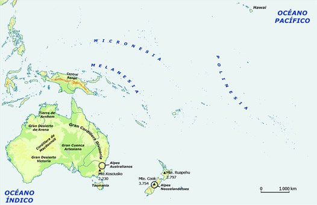Entre las principales unidades del relieve oceánico se cuentan la Gran Cordillera Divisoria, los Alpes Australianos, los Alpes Neozelandeses y el Gran Desierto Victoria.
Aprende
El clima de Oceanía está influenciado por su ubicación entre los trópicos, la influencia del mar y la altitud de sus zonas montañosas.
CLIMA UBICACIÓN Y CARACTERÍSTICAS Clima cálido El clima cálido se encuentra principalmente en Australia y en algunas islas de la Polinesia, la Melanesia y la Micronesia.
Características
- Temperaturas: altas durante todo el año con humedad elevada.
- Precipitaciones: abundantes.
- El paisaje: predomina la vegetación autóctona. Se encuentran árboles como fresnos, robles, cedros, palmeras y helechos; existen manglares, praderas y bosques.
- La fauna incluye marsupiales, como koalas, canguros y demonios de Tasmania, y otros mamíferos, como las ardillas voladoras.
Subclases de clima
Predominan el clima tropical húmedo, tropical seco y desértico.
- El clima tropical húmedo es propio de la región suroriental. Al norte de Australia predomina el clima cálido casi todo el tiempo, y en la zona meridional los inviernos son más fríos. En Polinesia y Micronesia la influencia de los vientos alisios ayuda a suavizar las temperaturas, que oscilan entre 20 y 24 ºC; las precipitaciones son más abundantes en la vertiente opuesta a los citados vientos.
- El clima desértico es propio de la zona suroriental de Nueva Zelanda y Australia. Predominan las lluvias escasas y las temperaturas de aproximadamente 30 ºC en los veranos y 10 ºC en los inviernos. Estas zonas se caracterizan por la escasa vegetación, las estepas y los pastos semiáridos.El clima templado El clima templado es propio de Nueva Zelanda y el sur de Australia.
Características
- Temperaturas: son altas y se suavizan con la brisa proveniente del océano Pacífico.
- El paisaje se caracteriza principalmente por sabanas y vegetación alpina propia de los Alpes Australianos y de los montes de Tasmania, especialmente pinos y eucaliptos.
Subclases del clima
- El clima oceánico, predomina en el sudeste de Australia y en Nueva Zelanda. Se caracteriza por veranos cálidos e inviernos frescos y lluvias uniformes durante todo el año.
- El clima mediterráneo se localiza principalmente en la zona suroccidental de Australia y en los Alpes Australianos.¡Recuerda!
Vientos alisios
Son vientos que circulan a una velocidad aproximada de veinte kilómetros por hora, principalmente en el hemisferio norte en dirección noreste-sureste. En su origen son secos, pero al pasar por los océanos se cargan de humedad.
Se presentan principalmente en el verano y menos en invierno, influenciando la temperatura y la humedad de las zonas en las que circulan.
Aprende
02.1.3La hidrografía
Los ríos de Oceanía son pocos y cortos. En su gran mayoría no son aptos para la navegación. Los principales ríos australianos son el Murray, el Darling y el Murrumbidgee. Existen además lagos salados como el Amadeus, el Carnegie Mackay y el Disappointment.
Nueva Zelanda cuenta con varios lagos, algunos de origen glaciar. El lago más grande es el Taupo.
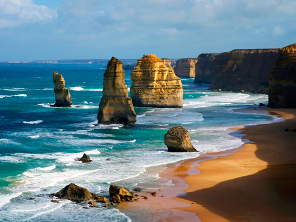Costa de Australia. Las olas transforman las playas y las costas, arrastran arena y erosionan los acantilados.
Aprende
02.2El aspecto humano de Oceanía
Oceanía es el continente insular más pequeño del mundo, está formado por Australia, Nueva Zelanda, Nueva Guinea y los archipiélagos de Polinesia, Melanesia y Micronesia.
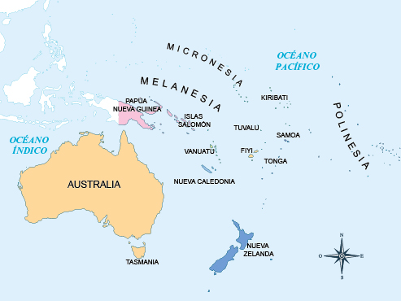Oceanía es el continente menos extenso del planeta. Sus fronteras se dividen entre catorce Estados. Además, un gran número de islas y archipiélagos pertenecen a otros Estados americanos o europeos. Por ejemplo, Nueva Caledonia forma parte de Francia.
02.2.1La población
Oceanía es un continente que cuenta con alrededor de 34 millones de habitantes. Es el menos poblado del mundo. Su población tiene una esperanza de vida promedio de 74 años.
Australia es el país que concentra la mayor población del continente y uno de los que a nivel mundial tiene mayor esperanza de vida, con 84,4 años en las mujeres y 80 años en los hombres.
Es un continente conformado por culturas diversas. Dumont D´Urville dividió en 1832 a Oceanía en cuatro grupos étnicos nativos: los aborígenes australianos, la Melanesia, la Polinesia y la Micronesia. Esta es una división cultural que aún se reconoce, en la que prima una perspectiva racial.
- Melanesia significa "islas negras" y el nombre surgió por el color de piel de sus habitantes. Se considera actualmente que esta población aborigen se ha extinguido, en gran parte, debido a los procesos de evangelización y de asimilación cultural. Se caracterizan por su diversidad de lenguas y sus costumbres religiosas ancestrales, en las que rinden cultos a sus antepasados.
- Micronesia significa "islas pequeñas". Está conformada por alrededor de 200 islas con una población que originariamente provenía de Asia. Durante su historia fue objeto de mestizajes de melanesios, polinesios y europeos. Este grupo poblacional se caracteriza por su tradición oral y musical. Además, es una sociedad en la que predominan los clanes matriarcales.
- Polinesia significa "muchas islas". Históricamente sus habitantes se derivan de sociedades primitivas caracterizadas principalmente por su relación con la guerra, la navegación, la música y la danza.
- En Australia y Nueva Zelanda predomina la cultura occidental, principalmente europea y norteamericana.
El país con mayor población es Australia, con aproximadamente 23 millones de personas. La Organización de Naciones Unidas estima que alrededor del 64 % de la población de Oceanía vive en este país y el 28 % en Nueva Zelanda y Nueva Guinea. La población australiana es principalmente urbana, y las ciudades más importantes son Sydney, Melbourne, Canberra, Adelaide, Brisbane y Goldcoast.
En Nueva Zelanda la mayor parte de la población vive en isla del Norte. Sus principales ciudades son Auckland, Wellington, -su capital-, Queenstown, y Christchurch, ubicada en la Isla Sur.
Practica
02.2.2El aspecto político
Oceanía se divide políticamente en catorce países independientes: Australia, Estados Federados de Micronesia, Fiji, Kiribati, Islas Marshall, Nauru, Nueva Zelanda , Palaos, Papúa Nueva Guinea, Islas Salomón, Samoa, Tonga, Tuvalu y Vanuatu.
En el continente hay 17 territorios dependientes de países como Francia, Estados Unidos, Nueva Zelanda, Reino Unido, Chile y Australia.
De los 14 países, Australia y Nueva Zelanda son los países con los gobiernos más estables del continente. Ambos tienen como forma de gobierno la monarquía constitucional. Nueva Guinea, Islas Salomón, Tuvalu y Tonga también tienen esta forma de gobierno.
Por su parte Fiji, Nauru, Samoa y Vanuatu son democracias parlamentarias o presidenciales.
Los Estados del continente oceánico conforman desde el año 2000 el Foro de las Islas del Pacífico, una organización regional a la cual pertenecen los 14 países independientes. El propósito principal de esta organización es la integración de los territorios y el desarrollo de acciones para solucionar problemas económicos, de seguridad y de medio ambiente.
02.2.3La economía
Australia y Nueva Zelanda son las principales economías de Oceanía. En Australia prevalecen las industrias gráfica y editorial, alimentaria, química y automovilística; también es importante en este país la actividad minera. En Nueva Zelanda predomina la industria alimentaria y ganadera. Los dos países son los principales productores de lana en el mundo y han venido desarrollando una importante economía en el sector de los servicios.
En las islas del Pacífico la economía es fundamentalmente agrícola. Sus principales productos son el coco, el arroz y la caña de azúcar. Otra importante fuente de ingresos es el turismo.
El Foro de las Islas del Pacífico es la principal organización en el continente. Entre sus propósitos se encuentran el fortalecimiento de la economía de sus países miembros en temas como:
- Desarrollo de las exportaciones.
- Inversión extranjera.
- Promoción del turismo y la pesca.
- Desarrollo del comercio exterior.
- Promoción de la integración económica de la región.
- Fomento de la cooperación técnica y económica.
- Desarrollo empresarial favorable y sostenible.
02.3Consolidación
Actividades para consolidar lo que has aprendido en esta sección.
-
03
Geografía física y humana de la Antártida
Open or CloseLa Antártida está localizada al sur del Círculo Polar Antártico y tiene una superficie aproximada de 14 000 000 de km2, es el continente más frío y seco de la Tierra. Más del 95 % del territorio permanece congelado y en su centro se encuentra el Polo Sur geográfico.
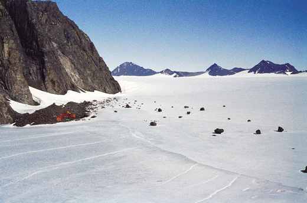Casquete glacial de la Antártida. Una gruesa capa de hielo cubre el continente y solo el 2 % del territorio aflora a la superficie.
Aprende
03.1El aspecto físico de la Antártida
La Antártida está conformada por un bloque continental y un conjunto de islas cubiertas por una capa de hielo que alcanza un espesor entre 2200 y 2600 m.
En el territorio de la Antártida confluyen las aguas de los océanos Pacífico, Antártico e Índico. Destaca la península Antártica o Tierra de Graham y los golfos que forman el mar de Wedell y el mar de Ross.
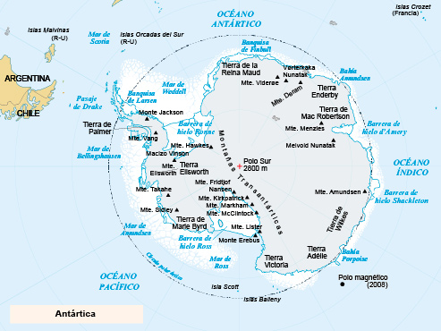La Antártida se encuentra ubicada en el Polo Sur y presenta una temperatura media de -58 °C, es el continente más frío y seco de la Tierra.
03.1.1Relieve
En la Antártida se encuentran los montes Trasantárticos y los montes Ellsworth, donde se localiza el pico Vinson, que con 5140 m es la mayor elevación del continente. Los montes Trasantárticos, que se extienden desde la península Antártica hasta el mar de Ross, dividen el continente en Antártida oriental y Antártida occidental.
03.1.2Clima
La Antártida tiene clima polar, que se caracteriza por temperaturas muy bajas durante todo el año. En el centro, donde no llega la influencia de las aguas oceánicas, las temperaturas oscilan entre 0 y los -58 °C, mientras que en la periferia la temperatura oscila entre los -25 y los 0 °C.
El invierno y el verano de la Antártida se prolongan durante seis meses al igual que la noche y el día. Durante el invierno, por las bajas temperaturas se produce un mayor congelamiento de las aguas y el continente se dobla en tamaño.
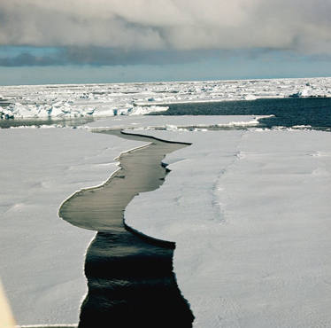Banquisa de Ross en el mar de Ross. Durante el invierno, las extremas temperaturas hacen que la superficie del mar que rodea al continente de la Antártida se congele y forme una extensa capa de hielo denominada banquisa.
03.2El aspecto humano de la Antártida
La Antártida fue descubierta desde finales del siglo XVIII y desde entonces se sucedieron expediciones de exploración lideradas inicialmente por Gran Bretaña, Francia y Noruega. Desde comienzos del siglo XX, las expediciones se hicieron más frecuentes y estas naciones, junto con Australia, Argentina, Chile y Nueva Zelanda, reclamaron la posesión de territorios en la Antártida.
Los intereses de estas naciones, de reclamar territorios y explotar sus recursos, se han visto frenados por:
- El Tratado Antártico, firmado en 1959, congeló todas las reclamaciones y permitió la desmilitarización del territorio y la libre investigación con fines pacíficos científica de todos los países.
- La resolución adoptada por la Organización de las Naciones Unidas, ONU, en 1989 para promover la declaración de la Antártida como reserva natural de la humanidad.
- El acuerdo de Madrid de 1991, establece una moratoria de cincuenta años para la explotación de minerales.
¡Recuerda!
El Tratado Internacional Antártico, firmado en 1959, entró en vigor en 1961 y ha sido acogido por 53 países. Su artículo IV dice: Ningún acto o actividad que se lleve a cabo mientras el presente Tratado se halle en vigencia constituirá fundamento para hacer valer, apoyar o negar una reclamación de soberanía territorial en la Antártida, ni para crear derechos de soberanía en esta región. No se harán nuevas reclamaciones de soberanía territorial en la Antártida, ni se ampliarán las reclamaciones anteriormente hechas valer, mientras el presente Tratado se halle en vigencia.
En la actualidad, la Antártida es habitada por cerca de mil personas, especialmente científicos de distintas nacionalidades que adelantan investigaciones en las estaciones internacionales construidas para tal fin y se calcula que cada año la visitan en promedio dos mil turistas.
Entre los problemas que afectan la conservación de la Antártida se cuentan, principalmente, el enorme agujero en la capa de ozono que cubre la Antártida debido al uso, en todo el mundo, de clorofluorocarbonos presentes en los aerosoles, y también por el deshielo de grandes masas producido por el efecto invernadero, que ha causado el aumento de las temperaturas en todo el planeta.
03.3Los recursos naturales de la Antártida
Debido a las bajas temperaturas, solo hay presencia de musgos y líquenes en pequeños sectores de la costa y en las islas cercanas.
En la zona costera habitan focas, leones marinos y numerosas especies de aves, entre las que destacan los pingüinos.
Se han encontrado yacimientos de uranio, oro, carbón, cobre, petróleo y gas natural, pero las extremas condiciones climáticas hacen muy difícil la explotación.
03.4Consolidación
Actividades para consolidar lo que has aprendido en esta sección.
-
04
Competencias
Open or ClosePon a prueba tus capacidades y aplica lo aprendido con estos recursos.
-
Fin de unidad:
Open or Close
repasoWebs de referencia
- Recorridos por los paisajes de América.
- Aspecto físico y humano de América Latina en Geografía y desarrollo en América Latina.
- Efectos del calentamiento global.
- Texto y mapas acerca de la geografía humana de Norteamérica (en inglés).
- Accidentes y geográficos y características destacadas de la geografía de Oceanía.
- Descripción de la geografía de la Antártida (en inglés).